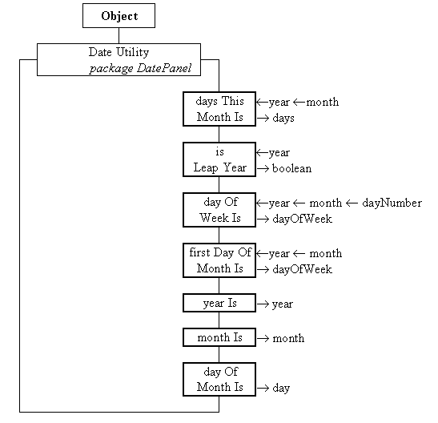

The DateUtility class provides a collection of class wide methods which can be used to obtain the current data and determine various things about dates in general. Its class diagram is given in Figure 3.12.

Figure 3.12 The DateUtility class diagram.
All of the methods in this class are class wide as indicated by heavy boxes. The first method daysThisMonthIs() will return the number of days in the year and month supplied, allowing for the possibility of a leap year. The isLeapYear() method will return true if the year supplied is a leap year and false otherwise. The dayOfWeekIs() method will return a integer in the range 0 to 6 indicating which day of the week the dayNumber, month and year supplied falls on. A returned value of 0 indicates a Sunday and subsequent values the corresponding day of the week. The firstDayOfMonthIs() method returns an integer value, using the same convention, for the day of the week on which the first day of the month and year supplied falls on. The final three methods yearIs(), monthIs() and dayOfMonthIs() return the year, month and day of month as indicated by the computer's internal clock. The implementation of this class is not vital to an understanding of the implementation of the DatePanel artiface and can be found in Appendix B.